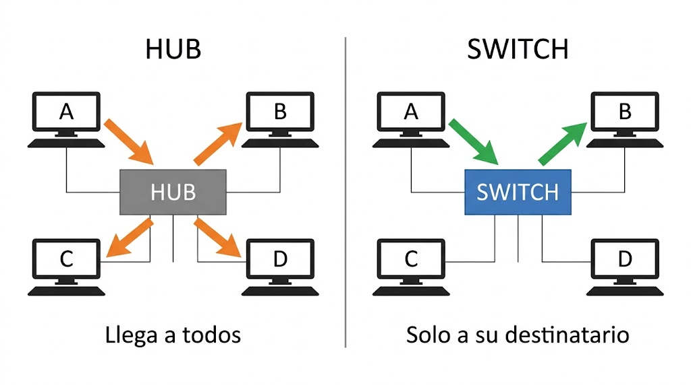

Y hay una idea que ordena las cuatro sesiones: cada dispositivo se define por la capa en la que trabaja. Eso determina qué mira, qué decide y hasta dónde llega.
Contenido del día
1. La idea que ordena toda la semana
Si tuvieras que quedarte con una sola frase de esta semana, sería esta:
| Capa | Qué mira | Dispositivo |
|---|---|---|
| 1 · Física | Nada: solo señales | Repetidor, hub |
| 2 · Enlace | La dirección MAC | Puente, switch, punto de acceso |
| 3 · Red | La dirección IP | Router, switch de capa 3 |
| 4 a 7 | Puertos y contenido | Cortafuegos, proxy, balanceador |
Un switch también toca la capa 1: recibe señales y las convierte en bits, igual que un hub. Lo que lo distingue no es lo que comparte con el aparato de abajo, sino lo que sabe hacer además.
Por eso un router, que mira direcciones IP, también entiende de MAC y de señales: para llegar a la capa 3 hay que pasar por las dos de abajo. Cada dispositivo incluye las capacidades de los inferiores.
2. El repetidor: capa 1
El aparato más simple de todos. Recibe una señal por un lado y la vuelve a emitir por el otro, con su amplitud original.
| Repetidor | |
|---|---|
| Capa | 1 · Física |
| Qué mira | Nada. No entiende direcciones, ni tramas, ni datos |
| Qué hace | Regenerar la señal para salvar la distancia máxima del medio |
| Para qué sirve | Alargar un enlace más allá de los 100 m del par trenzado |
Un repetidor hace exactamente eso, y por eso es un aparato de capa 1: trabaja con la señal, no con lo que la señal significa. No sabe si lo que pasa por él es una petición web o un ataque.
3. El hub: un repetidor con muchos puertos
Un hub —o concentrador— es exactamente eso: un repetidor con varios puertos. Lo que entra por uno sale por todos los demás.
Si el equipo A envía algo al equipo B, la trama llega también a C, a D y a todos los demás. Ellos la reciben, miran la MAC de destino, ven que no es la suya y la descartan.
Es decir: el filtrado existe, pero lo hace cada tarjeta de red al final, no el hub. El tráfico ya ha ocupado todos los cables para entonces.
Una red con hub tiene topología física de estrella —todos los cables van al aparato central— pero topología lógica de bus: eléctricamente todos comparten el mismo medio.
Es el ejemplo que se usó en el Día 5 de la Semana 1 para explicar que las dos topologías no tienen por qué coincidir. Ahora ya sabes por qué: el hub no separa nada, solo reparte cables.
4. El problema del hub
Repetir a ciegas tiene tres consecuencias, y las tres son graves.
Problema 1: un solo dominio de colisión
Como todos comparten el medio, si dos equipos transmiten a la vez las señales chocan. Hay que aplicar CSMA/CD: detectar la colisión, callarse, esperar un tiempo aleatorio y reintentar.
Peor aún: cuantos más equipos, más colisiones, y cada colisión es tiempo perdido en el que nadie transmite. El rendimiento no baja de forma proporcional: se desploma.
Es el cálculo que hiciste en el Día 2 de la Semana 1, ahora con nombre y apellidos.
Problema 2: solo puede funcionar en semidúplex
Si un equipo transmitiera y recibiera a la vez, se pisaría a sí mismo. Con un hub, todo el mundo trabaja en semidúplex: o se habla, o se escucha.
Problema 3: cualquiera puede leerlo todo
En una red con hub, cualquier equipo puede espiar a todos los demás sin tocar nada ni pedir permiso a nadie.
En el laboratorio de hoy vas a comprobar que en tu red eso ya no ocurre, y vas a medir exactamente cuánto tráfico ajeno te llega.
5. El puente: el primer aparato que entiende
El puente —o bridge— fue la solución intermedia, y aunque hoy no se compra, entender su idea es entender el switch.
| Puente | |
|---|---|
| Capa | 2 · Enlace |
| Qué mira | La dirección MAC de destino |
| Puertos | Pocos: normalmente dos |
| Qué hace | Une dos segmentos y decide si deja pasar cada trama |
Un puente une dos tramos de red y aprende qué direcciones MAC están a cada lado. Cuando llega una trama, mira su destino:
- Si está en el mismo lado del que vino, no la deja pasar: los dos equipos ya se oyen entre sí, y cruzarla solo molestaría al otro segmento.
- Si está al otro lado, la reenvía.
Con eso, el tráfico local de cada tramo se queda en su tramo. Se acabó que todo choque contra todo: ahora hay dos dominios de colisión en lugar de uno.
De hecho, la definición más honesta de un switch es: un puente con muchos puertos y hecho en hardware. La idea es de los años ochenta; lo que cambió fue el precio de aplicarla a 48 puertos a la vez.
6. El switch
El aparato central de cualquier red local de hoy. Un switch tiene un dominio de colisión por puerto, y eso lo cambia absolutamente todo.
| Switch | |
|---|---|
| Capa | 2 · Enlace |
| Qué mira | La dirección MAC de origen y de destino |
| Cómo decide | Con su tabla MAC, que construye solo |
| Dominios de colisión | Uno por puerto |
| Dominios de broadcast | Uno solo: no los separa |
| Dúplex | Completo: se puede enviar y recibir a la vez |
2. Se acabaron las colisiones. Con un solo equipo por puerto y dúplex completo, no hay con quién chocar. CSMA/CD sigue existiendo en el estándar, pero en la práctica ya no se usa.
3. El tráfico ajeno deja de pasar por tu cable. Si la trama de A para B no llega a tu puerto, no puedes leerla ni queriendo. Espiar deja de ser trivial.
Cuando llega una trama dirigida a
FF:FF:FF:FF:FF:FF —la dirección de difusión que viste
en la Semana 2— el switch la manda por todos los puertos. No puede hacer otra cosa:
esa dirección significa literalmente «para todos».
Así que un switch de 24 puertos crea 24 dominios de colisión pero un solo dominio de broadcast. Para separar dominios de broadcast hacen falta VLAN o un router, y eso es el miércoles.
Un switch de 24 puertos con 24 equipos conectados:
- Dominios de colisión: 24, uno por puerto.
- Dominios de broadcast: 1.
Y un hub de 24 puertos, en las mismas condiciones:
- Dominios de colisión: 1.
- Dominios de broadcast: 1.
Es la forma más rápida de resumir la diferencia entre los dos aparatos, y sale en los exámenes una y otra vez.
7. Comparativa y dominios

| Repetidor / Hub | Puente | Switch | |
|---|---|---|---|
| Capa | 1 | 2 | 2 |
| Qué mira | Nada | MAC | MAC |
| Puertos típicos | 4 a 24 | 2 | 5 a 48 |
| Dominios de colisión | 1 | Uno por puerto | Uno por puerto |
| Dominios de broadcast | 1 | 1 | 1 |
| Dúplex | Semidúplex | Depende | Completo |
| Ancho de banda | Compartido | Por segmento | Dedicado por puerto |
| Decide en | — | Software | Hardware (ASIC) |
| ¿Se compra hoy? | No | No | Sí |
Mientras decidir por MAC exigía software, un switch costaba mucho más que un hub y solo se ponía donde compensara. Cuando esa decisión pasó a hacerse en un circuito dedicado, el coste se desplomó y ya no hubo ningún motivo para fabricar hubs.
Hoy es prácticamente imposible comprar uno nuevo. Si alguien dice «hub» refiriéndose al aparato de su casa, casi seguro que es un switch. La palabra sobrevivió al aparato.
8. Resumen y errores frecuentes
- Un dispositivo se define por la capa más alta que mira, e incluye las capacidades de las de abajo.
- Repetidor y hub: capa 1. Repiten a ciegas porque no pueden ver la MAC.
- Un hub crea un solo dominio de colisión: ancho de banda compartido, semidúplex y tráfico visible para todos.
- Con hub, la topología física es de estrella pero la lógica es de bus.
- El puente introdujo la idea clave: decidir según la MAC de destino.
- Un switch es un puente con muchos puertos y hecho en hardware.
- Switch: un dominio de colisión por puerto, dúplex completo, ancho de banda dedicado.
- Pero un solo dominio de broadcast: no los separa. Para eso hacen falta VLAN o un router.
Errores frecuentes
| Se dice… | …pero en realidad |
|---|---|
| «El hub filtra el tráfico que no es para ti» | No puede: no ve la MAC. Filtra la tarjeta de red del destinatario, cuando ya ha llegado |
| «Un switch separa dominios de broadcast» | No. Crea uno por puerto de colisión, pero de broadcast sigue habiendo uno |
| «Un hub de 8 puertos a 100 Mbps da 100 a cada uno» | Da 100 entre todos: unos 12,5 Mbps por equipo |
| «Hub y switch es lo mismo con otro nombre» | Capa 1 frente a capa 2: uno repite y el otro decide |
| «El switch trabaja en capa 3» | En la 2: mira MAC. El de capa 3 es el router |
| «Un repetidor amplifica la señal» | La regenera: reconstruye los bits limpios. Amplificar aumentaría también el ruido |
| «Con switch ya no hay colisiones nunca» | Con un equipo por puerto y dúplex completo, no. Con un hub colgado de un puerto, sí |
| «El puente y el switch son cosas distintas» | Misma idea: el switch es un puente con muchos puertos y en hardware |
9. Repaso con flashcards
Piensa la respuesta antes de girar la tarjeta.
Quiz del día
14 preguntas · 22 minutos · Contesta sin volver a la teoría
El cronómetro no corre mientras lees: arranca al llegar aquí, al pulsar «Empezar quiz» o al marcar tu primera respuesta.
Resultados
Respuestas correctas: 0 / 0
Respuestas incorrectas: 0
Vas a demostrar con una captura que tu red usa un switch y no un hub: capturarás todo el tráfico visible en tu cable y contarás cuánto de él es tuyo, cuánto es difusión y cuánto es de otros equipos.
El resultado es contundente y explica de golpe las dos columnas de la tabla comparativa.
→ Ir al laboratorio del Día 1 (70 min)
El switch por dentro: cómo construye su tabla MAC sin que nadie se la configure, qué hace cuando no conoce un destino, y por qué eso convierte el arranque de una red en una sucesión de gritos.
Tarea de calentamiento (5 min): un switch recién enchufado no conoce ninguna MAC. ¿Cómo crees que averigua quién está en cada puerto, si nadie se lo dice?